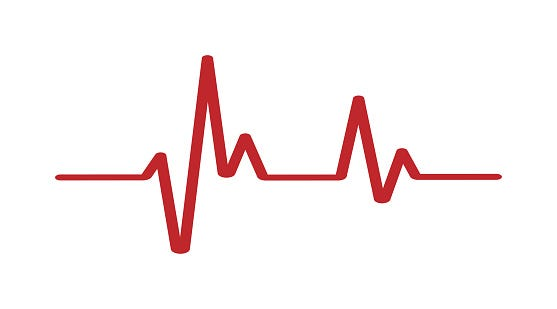

Hello there,
Welcome to my corner of the internet.
I'm Rushali, an ML Engineer passionate about building responsible AI systems that bridge the gap between cutting-edge research and real-world healthcare impact.
As an ardent advocate for human-centered machine learning, I am dedicated to fostering trust between individuals and AI systems through my work.
Having just completed my Master's in AI at Northeastern University, I specialize in Large Language Models, Retrieval-Augmented Generation,
and AI Safety—with a particular focus on public health and healthcare applications.
For my master's thesis with Samuel Scarpino, I developed a comprehensive framework for evaluating "unlearning" in
Large Language Models (LLMs) using Knowledge Graphs; work that addresses critical industry needs for privacy compliance and responsible AI deployment.
This research, presented at NeurIPS 2024, has direct applications for companies navigating GDPR requirements and ethical AI deployment.
During my masters, I was also working on disease outbreak prediction systems using LLMs at the Institute for Experiential AI.
My research interests span explainable AI, machine learning interpretability, and AI safety; areas I continue exploring even outside my formal research role.
Previously, I led telepresence system development for humanoid robots at the Indian Institute of Science,
where our team made it to the semi-finals of the $10 MILLION Avatar XPRIZE Competition.
That experience taught me the importance of bridging hardware and software to create seamless human-AI interactions.
Outside of building models and keeping up with current research, I absolutely love to paint.
My canvas includes but is not limited to paper, walls, rocks, my nails and my face.
I also do tricks on my jump rope and hula hoop.
Recent Projects
LLM Unlearning Evaluation Framework
As AI systems become more prevalent, the ability to "unlearn" specific information becomes crucial for privacy compliance and safety.
I developed a comprehensive framework for evaluating machine unlearning in large language models using knowledge graphs, distance metrics and
network science measures to quantify unlearning performance while identifying potentially harmful ripple effects that could compromise model integrity.
This work could directly addresses GDPR compliance requirements and privacy regulations that that need to be met when deploying LLMs in production.
Pandemic Preparedness Strategy Testing
 I developed a text-based pandemic simulation system by fine-tuning LLMs on 100,000+ outbreak reports from WHO and ProMED.
Built on a RAG architecture to minimize hallucinations, the system can generate realistic, novel outbreak scenarios that lets
public health officials safely test intervention strategies and improve preparedness through immersive, data-driven simulations.
I developed a text-based pandemic simulation system by fine-tuning LLMs on 100,000+ outbreak reports from WHO and ProMED.
Built on a RAG architecture to minimize hallucinations, the system can generate realistic, novel outbreak scenarios that lets
public health officials safely test intervention strategies and improve preparedness through immersive, data-driven simulations.
Heartbeat Hues

Healthcare AI must be interpretable to gain clinician trust.
I adapted LIME (Local Interpretable Model-agnostic Explanations) to analyze feature importance in heart congestion detection
from ECG data, comparing CNN and LSTM architectures to understand decision-making patterns.
Demonstrated a 68% alignment in top features and 100% alignment in top two features between the different model architectures,
thus providing confidence in the consistency of AI-driven cardiac assessments.
This work addresses the critical need for explainable AI in medical settings, where understanding model decisions is as important as accuracy.
Publications
LLM Unlearning EKG: Evaluations using Knowledge Graphs
Rushali Mohbe, Dr. Samuel Scarpino
NeurIPS 2024 - 19th Women in Machine Learning Workshop
An Autonomous Mobile Robot based Tele-Presence System with Augmentation
Rushali Mohbe, Poornima J D, Srijan Dokania, Shashank Goyal, Sridatta Chatterjee, and Bharadwaj Amrutur
ICRA 2nd Workshop Toward Robot Avatars
News
May 2025: Graduated with a Masters in AI from Northeastern University.Apr 2025: Defended my Masters Thesis "UNLEARN-KG: LLM Unlearning Evaluation Using Knowledge Graphs"
Dec 2024: Attended and presented my workshop paper at NeurIPS 2024
Oct 2024: Ethics Reviewer for NeurIPS 2024
Sept 2024: My paper titled "LLM Unlearning EKG: Evaluations using Knowledge Graphs" was accepted at WiML Workshop @ NeurIPS 2024
May 2024: Sucessfully completed the AI Safety Fundamentals course by BlueDot Impact
Sept 2023: Started a new position at The Institute of Experiential AI
Sept 2023: Joined Northeastern University for a Masters in Artificial Intelligence
Mar 2023: My paper titled "An Autonomous Mobile Robot-based Tele-Presence System with Augmentation" was accepted at 2nd Workshop Toward Robot Avatars @ ICRA 2023
Oct 2021: Semifinalist at $10 MILLION Avatar XPRIZE Competition

{kind=link}
{kind=link}
{kind=link}
{kind=link}